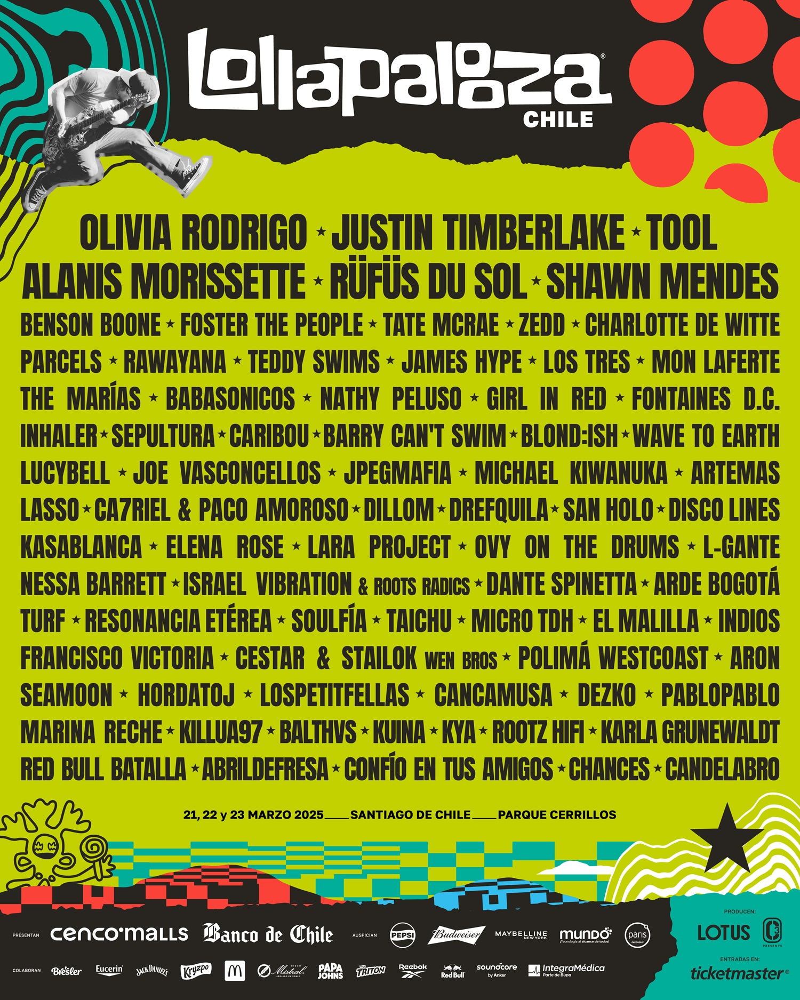
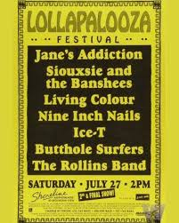

Desde el primer festival en 2011, el Lollapalooza chileno ha multiplicados escenarios y alargado la fiesta de dos días a tres días a partir del 2018, pero la expansión de su cartel no se ha traducido en mayor equidad. En sus 13 ediciones han pasado entre 1.116 artistas y bandas, y apenas un 29,1% (325) han tenido participación femenina como solistas, bandas femeninas o mixtas. Además, destaca que el mayor número de asistencia de las mujeres es en bandas mixtas (157) , las cuales en su mayoría son de género infantil y se presentan en el escenario del kidzapalooza.
Como sociedad, cada vez más nos preocupamos por tener paridad de género y tener una amplia representación, pero esto no lo podemos apreciar en la diversidad de artistas que entregan este festival. Se puede visualizar cómo a través de los años siempre el hombre tiene al menos el 60% de la participación sin contar las bandas mixtas. Y la mujer nunca llega siquiera a acercarse en cantidad, pues el 2022 fue el año con mayor paridad de género y las artistas mujeres más las bandas femeninas alcanzaron un 24,8% del cartel, aún lejos del 50%.
Hasta el 2017 cuando eran dos días de festival aproximadamente asistían 60 artistas y a partir del 2018 se presentan alrededor de 100 artistas. Pero, la paridad de género empieza a mejorar a partir del 2019 con un 18,8% de participación femenina y desde ahí su porcentaje nunca baja del 20%.
Otro aspecto interesante es lo que ocurre con las bandas masculinas que superan a los solistas hombres, lo cual abre una mayor brecha de género. Pues, en toda la historia del Lollapalooza Chile se han presentado 395 actuaciones individuales masculinas y 397 son bandas de hombres, que muchas veces suelen estar conformadas hasta por cinco integrantes. Esto acrecienta aún más la brecha de género.
El festival Lollapalooza, es un evento músical originario de Estados Unidos. Nació en 1991 como la gira de despedida de la banda Jane's Addiction, liderada por Perry Farrell que consistió en un recorrido por 20 ciudades entre Estados Unidos y Canadá. Este festival se caracteriza por ofrecer bandas de rock alternativo, indie, rock y punk y se celebró anualmente hasta 1997.
Chile, fue el primer país elegido de esta nueva versión del festival que se realizaría por primera vez fuera de Estados Unidos. El festival se realizó en el Parque O´Higgins los días 2 y 3 de abril de 2011 con aproximadamente 100 mil personas de público. Tal fue el éxito que a partir de ese año se ha celebrado anualmente - a excepción de los años 2020 y 2021, debido a la pandemia de Coronavirus - . Además, desde su octava edición, en 2018, pasó a tener 3 días de duración. Actualmente el festival se lleva a cabo en el Parque Bicentenario de Cerrillos y vienen artistas de distintos países y géneros musicales a nuestro país, en la última edición se presentaron más de 100 artistas.
